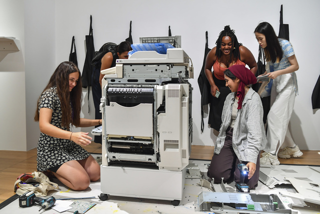

About me
I have a passion for building things, taking things apart, and using the bits that I find to make new things. I love experimenting with new ideas, new devices, and new techniques. I like using parts in ways for which they were not intended. I like setting up situations where people have experiences that they may not have otherwise.

My research interests include how people behave around robots, unusual mechanisms, and surprising uses of technology.
My practice includes participatory art, machine art, experimental sound art, and conceptual furniture.
